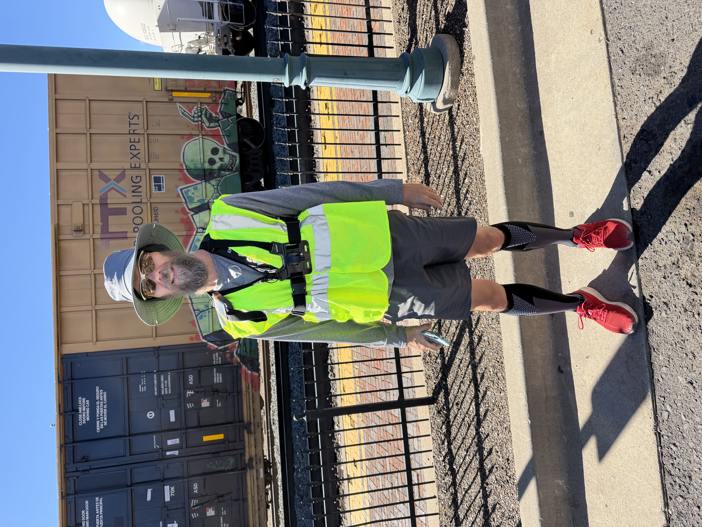
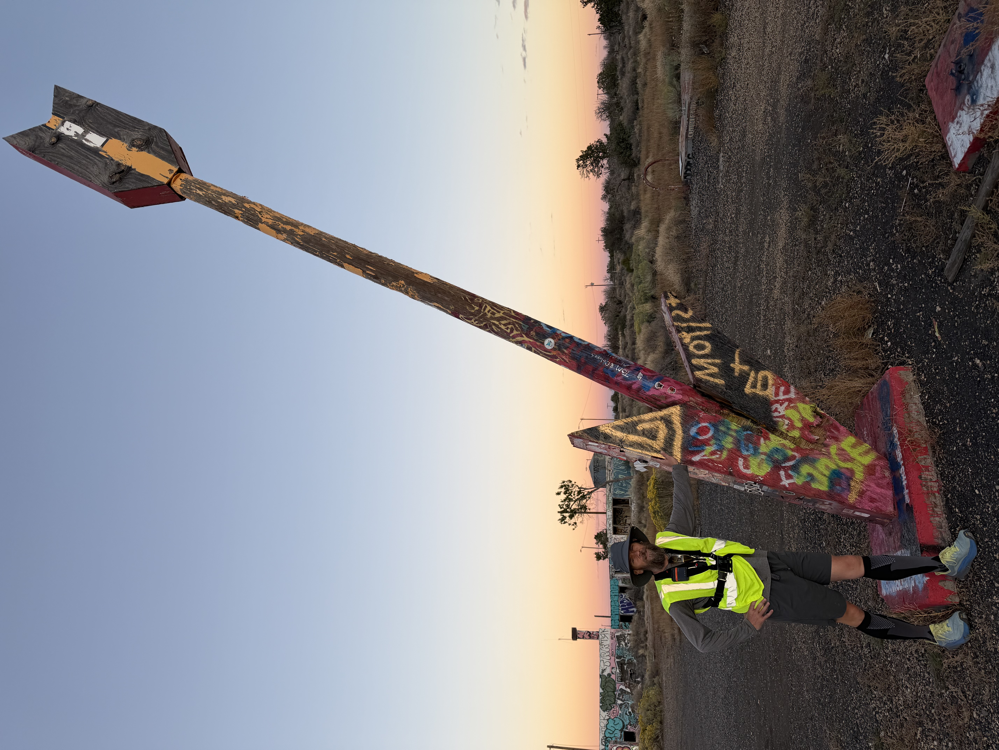

After the day four adventure in the Grandest of Canyons and the 400+ flights of stairs and 14+ miles of hiking we opted for a rest day.
So, have you ever wondered what an ultra guy’s rest day looks like? I bet you have. Here’s the schedule. Sleep in till 6:30, eat breakfast, relax and chill till about 9 then put on your gear and set off on a nice gentle 23 mile run out of Flagstaff and towards Winslow. I mean, it’s not marathon length, so it’s super restful.
We finished up at sunset at Twin Arrows (we don’t know where the other arrow went, there was only single arrow when we got there, I promise). Then we headed back to Flagstaff to eat and squish our sore legs again (leg squishers are the best), and off to an early bedtime in preparation for a bigger day 6 tomorrow. Stay tuned!
P.S. we learned that we shut down Bright Angel trail on the 13th. They closed it down the next day because of a rockfall that required trail repairs. Yep, we tore up the Grand Canyon. 😳


Comments for This Day